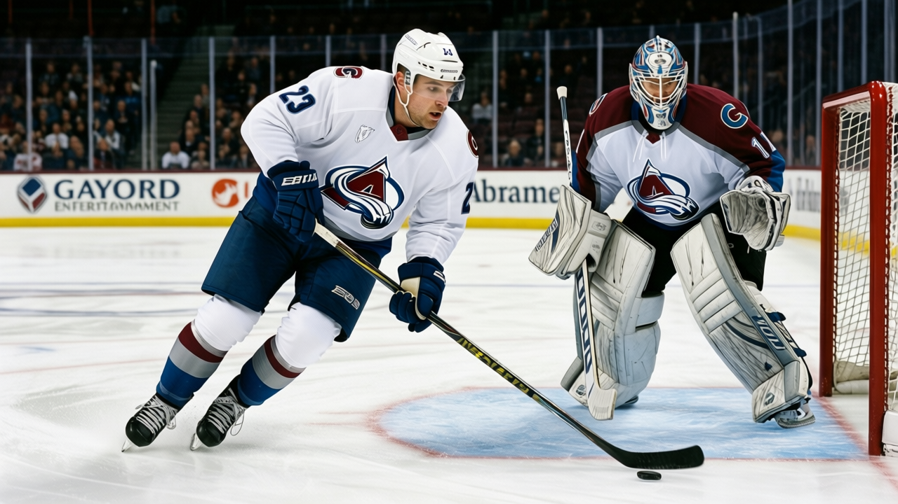
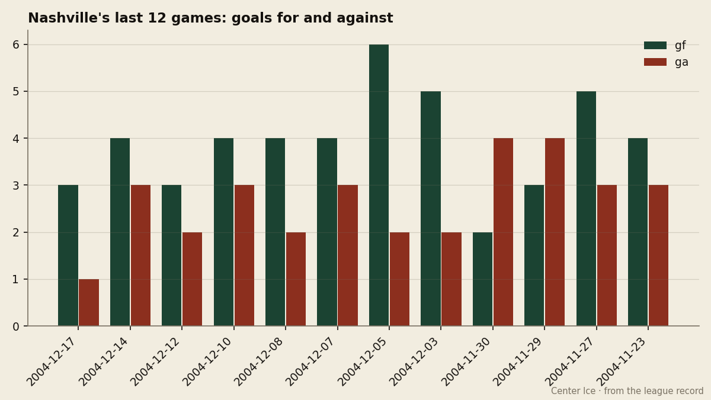
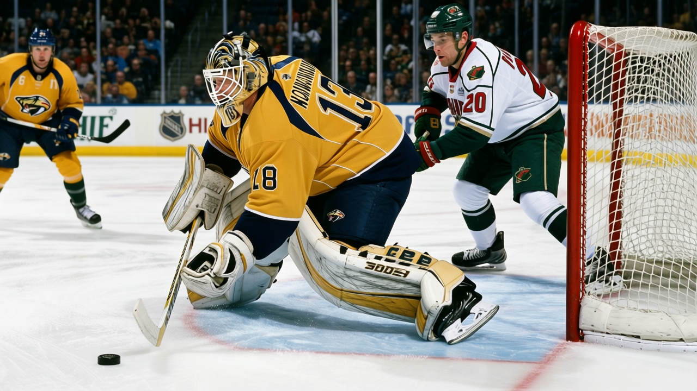

The Blaine Rankings, Week 8: David Legwand is the second overall pick Nashville drafted, and he is finally playing like it
Eight straight wins, 28 goals in 31 games, and a payroll that returns $1.11M a point
 Howard BlaineSenior writer, The Blaine Rankings · The Hockey Gazette
Howard BlaineSenior writer, The Blaine Rankings · The Hockey Gazette
 David Legwand87 has scored 28 goals in 31 games, more than the 22 he put up in 41 games last season, and the
David Legwand87 has scored 28 goals in 31 games, more than the 22 he put up in 41 games last season, and the  Nashville Predators Predators are 8 straight wins into the Western Conference schedule with 42 points on a payroll of $46.77M. The Development Index has the 24-year-old center 3 points above his base grade of 88. The Book has him at 87 overall, with a speed rating of 98, puck handling at 91, and morale at 97. The second overall pick of the 1998 draft is playing like a second overall pick, and it has taken 7 seasons and one mononucleosis setback to get here.
Nashville Predators Predators are 8 straight wins into the Western Conference schedule with 42 points on a payroll of $46.77M. The Development Index has the 24-year-old center 3 points above his base grade of 88. The Book has him at 87 overall, with a speed rating of 98, puck handling at 91, and morale at 97. The second overall pick of the 1998 draft is playing like a second overall pick, and it has taken 7 seasons and one mononucleosis setback to get here.
Last year, at 21.5 minutes a night, he was a 22-goal center with room to grow. This year, at 24.3 minutes, the coach is asking him for the penalty kill, the defensive draws, the matchups against first lines, and he is giving back 28 goals in 31 games on a Nashville Predators club that has not lost in 8. "The coach doesn't say much about it, he just puts me out there," Legwand told The Tunnel's Jan Kowalczyk this week. "Last five, the kill, the big draws in our end. When a coach trusts you like that, you wanna prove him right every shift." His contract runs two more years at $8.37M.
Poile's gamble, Plymouth's captain, and a tiny corner of trivia
David Poile traded Nashville's first and second round picks to San Jose for the 2nd and 85th picks in 1998. The second was Legwand, the captain of the Plymouth Whalers, the Red Tilson Award winner in the OHL, a Detroit kid from Grosse Pointe North High School. Mononucleosis took him out of training camp that fall and back to Plymouth for the better part of a season. When he came back, he scored on the first penalty shot in overtime in league history, a December night against  New York Rangers in 2000.
New York Rangers in 2000.
"You know that one. Yeah. They still bring it up," Legwand told The Tunnel about the record. "It's a funny record to have, you know, like it's trivia. Tiny corner of the game."
That record is trivia. His 45 points lead the Predators by 9 over  Scott Walker82's 36 in 26 games, and his 28 goals are 12 more than any other Nashville forward has scored this season. The room's offense runs through him, and it is the first time in this franchise that the second overall pick has been the engine.
Scott Walker82's 36 in 26 games, and his 28 goals are 12 more than any other Nashville forward has scored this season. The room's offense runs through him, and it is the first time in this franchise that the second overall pick has been the engine.

The 8-game run is what separates this from a hot streak. The figure shows every goal scored and allowed in the last 12 games. You can see the two defeats that preceded the streak, a 4-2 loss to  Dallas Stars on November 30 and a 3-4 overtime loss to
Dallas Stars on November 30 and a 3-4 overtime loss to  New Jersey Devils the night before, and then 8 straight, most of them decided by one or two goals, none of them ugly. Vokoun holds, the defense does not panic, and a 24-year-old center puts in 3 or 4 goals a week.
New Jersey Devils the night before, and then 8 straight, most of them decided by one or two goals, none of them ugly. Vokoun holds, the defense does not panic, and a 24-year-old center puts in 3 or 4 goals a week.
 Tomas Vokoun90 is 15-10 with a 2.99 goals-against average and a .853 save percentage in 25 starts. He has no shutouts. He is patient about the zero.
Tomas Vokoun90 is 15-10 with a 2.99 goals-against average and a .853 save percentage in 25 starts. He has no shutouts. He is patient about the zero.
"I wait. It will come," Vokoun told The Tunnel's Marcus Bell after the 4-3 win over  Minnesota Wild on December 14. "The win is more important, you know. 15 wins, that is the number I look at."
Minnesota Wild on December 14. "The win is more important, you know. 15 wins, that is the number I look at."
The Western Conference, seen from Nashville
| Club | GP | W | L | OTL | Pts | GF | GA | Streak | Payroll | $/Pt |
|---|---|---|---|---|---|---|---|---|---|---|
 Colorado Avalanche Colorado Avalanche | 31 | 23 | 5 | 2 | 50 | 154 | 92 | L1 | $71.56M | $1.43M |
| Dallas Stars | 33 | 19 | 10 | 1 | 45 | 144 | 114 | L1 | $66.88M | $1.49M |
 Vancouver Canucks Vancouver Canucks | 32 | 17 | 9 | 4 | 42 | 132 | 115 | W2 | $34.94M | $0.83M |
| Nashville Predators | 31 | 16 | 8 | 4 | 42 | 122 | 107 | W8 | $46.77M | $1.11M |
 Edmonton Oilers Edmonton Oilers | 32 | 12 | 11 | 1 | 41 | 124 | 134 | W3 | $36.81M | $0.90M |
 Detroit Red Wings Detroit Red Wings | 31 | 14 | 10 | 4 | 38 | 120 | 121 | W4 | $80.89M | $2.13M |
Colorado Avalanche at 50 points and 14-2 on the road is the best team in the conference and the best travel club in hockey. Dallas Stars at 45 is the Presidents' Trophy winner from last spring. Vancouver Canucks and Nashville Predators are level at 42, but Vancouver's payroll is $34.94M against Nashville's $46.77M. Edmonton Oilers at 41 on $36.81M is the cheapest roster among the playoff-contending clubs, and I examined last week what a 3.68 goals-against average does to an efficiency case and concluded it erodes one. Detroit Red Wings at 38 points and $80.89M is paying $2.13M a point, the highest figure in the conference.
The spread from first to sixth is 12 points. The Predators have won 10 of 17 on the road, and the 42 points through 31 games puts them exactly where I placed them in Week 4: inside the field, behind the two teams that are ahead of everyone, and in front of a middle group that cannot close the gap.

The center conversation
Among the centers who appear on the League Scouting Bureau's top 30 in scoring,  Joe Thornton92 leads in goals at 31 in 31 games. Legwand is not on that list: 45 points in 31 games falls below the 30th player on it, who has 49. But his 28 goals are the most of any center who is not.
Joe Thornton92 leads in goals at 31 in 31 games. Legwand is not on that list: 45 points in 31 games falls below the 30th player on it, who has 49. But his 28 goals are the most of any center who is not.
| Player | Club | GP | G | A | Pts | MPG |
|---|---|---|---|---|---|---|
| Joe Thornton |  Boston Bruins Boston Bruins | 31 | 31 | 23 | 54 | 20.4 |
| David Legwand | Nashville Predators | 31 | 28 | 17 | 45 | 24.3 |
 Mario Lemieux83 Mario Lemieux83 |  Pittsburgh Penguins Pittsburgh Penguins | 25 | 24 | 31 | 55 | 19.4 |
 Alexei Zhamnov83 Alexei Zhamnov83 |  Chicago Blackhawks Chicago Blackhawks | 32 | 24 | 31 | 55 | 22.1 |
 Mike Modano86 Mike Modano86 | Dallas Stars | 29 | 23 | 39 | 62 | 21.0 |
 Vincent Lecavalier88 Vincent Lecavalier88 |  Tampa Bay Lightning Tampa Bay Lightning | 33 | 22 | 35 | 57 | 23.1 |
 Scott Gomez83 Scott Gomez83 | New Jersey Devils | 29 | 21 | 30 | 51 | 22.1 |
 Mike Comrie80 Mike Comrie80 | Edmonton Oilers | 32 | 12 | 44 | 56 | 21.9 |
Legwand's 17 assists are the fewest of any center on this table, and his 24.3 minutes are the most. He is not creating at the rate the others are; he is finding the net. The speed rating of 98 explains the method if you have seen him play: the first step past a defender is the first step in the league, and at 24.3 minutes a night, the coach is giving him the ice to use it.
Thornton told The Tunnel's Jan Kowalczyk after a loss to  Ottawa Senators this month that he would trade half his points for a better record in Boston Bruins. That is what the standings do to a man's voice when the room is quiet. Legwand's room is winning, so he does not have to trade anything.
Ottawa Senators this month that he would trade half his points for a better record in Boston Bruins. That is what the standings do to a man's voice when the room is quiet. Legwand's room is winning, so he does not have to trade anything.
Logged predictions
I said in Week 4 that Nashville was the fourth team in the West and that the Predators would make the playoffs. The 8-game streak is the answer to that observation. I am logging two predictions here. First: Nashville finishes in the Western Conference's top 8. Second: David Legwand finishes the season with 35 goals or more. The first is what the standings say now, and the standings at Christmas are the standings in April. The second is conservative given where he sits at 31 games, and I have been slow to credit this man in the past. He is making me revise.